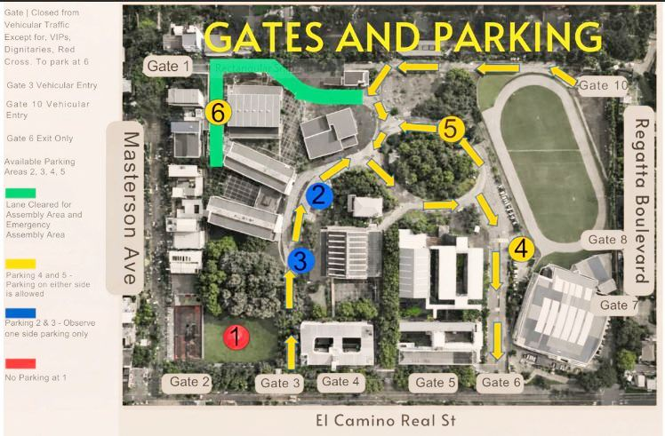
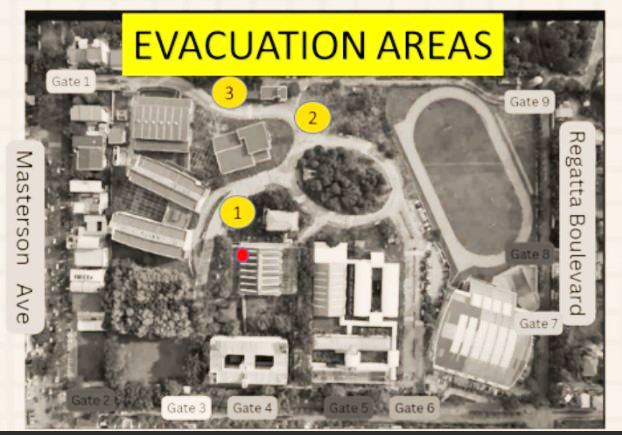
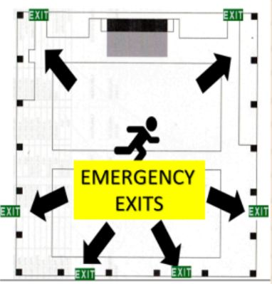

Schedule of Ceremonies
April 15, 2026 (Wednesday)
Baccalaureate Mass and Convocation
| 6:30 AM | Assembly |
| 6:45 AM | Processional |
| 7:30 AM | Baccalaureate Mass |
| 9:15 AM | Academic Convocation |
April 16, 2026 (Thursday)
Commencement Exercises – Group 1
INS, MACH, MECX, HUMSS, STEM A
INS, MACH, MECX, HUMSS, STEM A
| 6:15 AM | Assembly |
| 6:30 AM | Donning |
| 6:50 AM | Processional |
| 7:30 AM | Ceremonies |
April 17, 2026 (Friday)
Commencement Exercises – Group 2
ABM, STEM B
ABM, STEM B
| 6:15 AM | Assembly |
| 6:30 AM | Donning |
| 6:50 AM | Processional |
| 7:30 AM | Ceremonies |
IMPORTANT: Only the following will be allowed inside the SHS Covered Court: (a) Maximum of 2 companions (parents/guardians) per graduate; (b) The candidate/graduate; (c) Duly authorized personnel; (d) Invited guests.
Other Schedules Leading to Graduation
| March 17–19, 2026 | Grade 12 Final Exam |
| March 19, 2026 | 2PM–5PM – Graduation Orientation, Presentation of Grad Song |
| March 23–27, 2026 | Final PT Days |
| April 1, 2026 | Delayed Exam and Submission of Final Grades |
| April 6, 2026 | Final Grade Deliberations for G12 and G11 |
Graduation Rehearsals
| April 6, 2026 |
7AM–11AM: Simulation for April 15 Program 1PM–5PM: Simulation for April 16 Program |
| April 7, 2026 |
6:30AM–11AM: Simulation for April 15 Program 1PM–5PM: Simulation for April 17 Program |
| April 8, 2026 | 6:15AM–11AM: Simulation for April 15 Program |
| April 10, 2026 |
Posting of Candidates for Graduation, G12 List of Honors and Awards 6:15AM–11AM: Simulation for April 15 Program, Final Class Photo Taking, Releasing of Graduation Paraphernalia |
| April 13, 2026 | Graduation Ball 2026 |
| April 14, 2026 |
Awardees' Rehearsals 8–10AM: April 16 Group of Awardees 10AM–12PM: April 17 Group of Awardees |
Attire, Dress Code & Punctuality
For Male Students
▼✔ Allowed
- White, Off-white, or Cream Barong Tagalog (with collar, long sleeves)
- Plain white/cream undershirt
- Black formal slacks
- Black leather shoes
- Black formal socks
- Prescribed haircut (2×3) – Gentleman's cut
- Natural hair color only
✘ Not Allowed
- Earrings
- Sling bags
- Large bags
- Paper bags
- Any bulky items
For Female Students
▼✔ Allowed
- White, Off-white, or Cream Lady Barong (three-fourth sleeves, Chinese collar)
- Plain white/cream female undershirt
- Black pencil-cut or A-line skirt (knee length; back slit not more than 4 inches) or Black formal slacks
- Black Hijab for Muslim Women
- Black closed shoes with heels not exceeding 2 inches
- Light day make-up
- Skin tone stockings
- Stud earrings only
- Long hair must be fixed in a bun or ponytail, brushed away from the face and nape
- Natural hair color only
- Handbag or hand purse only
✘ Not Allowed
- Boots
- Stiletto high-heeled shoes
- Sling bags
- Large bags
- Paper bags
- Any bulky items
Attire Guidelines for Parents
▼To maintain the dignity and solemnity of the Graduation Ceremony, parents and guests are kindly requested to come in semi-formal or formal attire.
- Fathers: Barong Tagalog or collared polo with slacks and closed shoes
- Mothers: Dress, blouse with skirt or slacks, or Filipiniana-inspired attire
Please avoid wearing T-shirts with large prints, sleeveless shirts, shorts, ripped jeans, slippers, or flip-flops.
Garlands, corsages, other ornaments, and/or flowers may be given and worn but only after the recessional of the Commencement Exercises.
Coming late is discouraged.
All graduates must look for their Faculty Coordinators for proper guidance before entering the building on both the Baccalaureate Mass and the Commencement Exercises.
Coming late is discouraged.
All graduates must look for their Faculty Coordinators for proper guidance before entering the building on both the Baccalaureate Mass and the Commencement Exercises.
What to Bring
- Candidates are instructed to bring their Sablay.
- Make sure you have your own handkerchief and water supply (in a tumbler). You may also bring foldable or portable lollipop rechargeable fans for your use during the ceremonies, as long as they do not cause undue baggage on your part.
- You may bring biscuits and candies, but not chocolates, as they may melt before being consumed.
- Parents must bring their admission passes/ribbons during Commencement Exercises.
- Xavier University is committed to the preservation of the environment. Chewing gum, disposable single-use plastics, and water bottles will not be allowed on campus. Graduates, parents, and guests are requested to bring their hydration tumblers. Water stations are available strategically inside the courts, and refilling is free.
Basic Disposition
- Candidates are to come ahead of time to avoid undue delay. Take breakfast or a heavy meal prior to attending the ceremonies.
- Help maintain the solemnity of all ceremonies by participating actively. Avoid unnecessary noise/movements.
- Mobile phones should be turned off or put in silent mode. Candidates are to refrain from using their phones while the ceremonies are ongoing.
- As a courtesy to and out of respect for your fellow graduates, you and your family are requested to remain in your seats until the conclusion of the ceremonies.
- Picture-taking is allowed only during the "Sablay" donning ceremony and after the graduation rites. Strictly, No Picture-Taking is allowed during the ceremonies, even if you are stationed in your place. All Candidates, parents, and guests are to refrain from taking pictures from the floor while the ceremonies are ongoing.
Photographs
- The XU Bookcenter will be our Official XU Graduation Photo In-Charge. All photo transactions shall be done with this office. A fee of ₱200 will be charged for three shots for soft copies.
- Awardees with their parents may have their pictures taken at the pinning area. Hard copies of the photos will be availed by the provider outside the venue after the ceremonies.
- A photobooth is available for group, family or individual captures before and after ceremonies.
Donning Ceremony (April 16 & 17, 2026 – 6:30 AM)
- The Donning Ceremony will be held outside the Covered Courts prior to the Commencement Exercises processional.
- Candidates are to assemble at the lanes by 6:15 AM with their parents on one side.
- At the first strains of music, candidates should turn and face their parents/guardians and present the sablay to them. Then, the parents/guardians are requested to don the Sablay to the candidates and position it on the left shoulder–right hip configuration.
- The Overall Chair instructs candidates to return to their respective lines and prepare for the processional. Parents are then requested to clear the processional lane and proceed to the Covered Courts.
- Ahead of time, the Candidates with their parents are expected to rehearse on their own the proper way of donning the "sablay".
Conferring of Graduates
- After the President has declared the candidates as official graduates of XUSHS, the graduates are to transfer their sablay to the right-shoulder left-hip position and be seated.
Vehicle Pass, Parent Pass & Parking
Parent Pass (Released April 10, 2026)
▼- Every candidate shall claim two (2) Parent Passes from their moderator and give them to their parents. Parents shall surrender these passes upon entry to the Covered Courts during Commencement Exercises. Upon entry, all Parents/guardians shall present themselves and their bags for security inspection.
- For parents of the awardees, two (2) Ribbon Passes shall be issued instead. Parents are advised to pin their ribbons on their left chest before going through the inspection lane.
- There will be Inspection lanes for each entrance — one for females and another for males — for order and a smooth entrance to the Covered Courts.
- Candidates are strongly advised that only two representatives may be allowed to enter the Covered Courts to witness the proceedings.
- Children below 15 years are not allowed inside the campus. Seats are limited for the parents. Those with health conditions are discouraged from entering the Covered Courts.
- Bringing large bags is highly discouraged.
Vehicle Pass (Applications: March 19 – Releasing: April 10, 2026)
▼- There are limited parking spaces in the Pueblo Campus. Only ONE pass will be issued to a candidate on a first-come, first-served basis. To register, please fill in the form at:
https://bit.ly/4s0kmtP
between March 19, 2026 to April 6, 2026. - Requirements for registration:
- Photocopy of the Vehicle's OR and CR
- Scanned copy of the Vehicle Driver's License
- Note: Vehicle Pass is non-assurance of parking slot due to limited space. Hence, the first-come, first-served policy applies. Upon entering the school premises, the driver/owner must surrender the Vehicle Pass to the Guard on Duty.
Parking Advisory
▼- Emergency Response Vehicles and Dignitaries will be given priority parking spaces at the back of the Covered Courts.
- Signages are displayed for guidance.
- Graduates with vehicles shall enter through the JHS gate (3) and proceed to (2) for drop-off. Available parking spaces are found in 1, 2, 3, 4, and 5 on a first-come, first-served basis.
Gates & Parking Reference:
Gate 1 – Closed from Vehicular Traffic except for VIPs, Dignitaries, Red Cross. To park at 6.
Gate 3 – Vehicular Entry | Gate 10 – Vehicular Entry | Gate 6 – Exit Only
Available Parking Areas: 2, 3, 4, 5
Parking 4 & 5 – Parking on either side is allowed
Parking 2 & 3 – Observe one side parking only
No Parking at 1
→ View Gates & Parking Map in Section 15
Gate 1 – Closed from Vehicular Traffic except for VIPs, Dignitaries, Red Cross. To park at 6.
Gate 3 – Vehicular Entry | Gate 10 – Vehicular Entry | Gate 6 – Exit Only
Available Parking Areas: 2, 3, 4, 5
Parking 4 & 5 – Parking on either side is allowed
Parking 2 & 3 – Observe one side parking only
No Parking at 1
→ View Gates & Parking Map in Section 15
Commencement Exercises – Farewell Gauntlet
- The Farewell Gauntlet is the XUSHS Community Tradition in sending off its alumni into responsible adult life in the outside world. As a symbolic gesture of trust and confidence to its graduates, the faculty and staff, upon a recession, shall line up at either side of the center aisle in Honor Guard fashion to applaud the graduates. Graduates shall line up along the outside portions of the cluster and march through the gauntlet of teachers, moderators, mentors, and administrators as they exit. Hence, we request the graduates' family and friends to remain seated as we perform this tradition.
Security Advisory
- All visitors to the XUSHS will be subjected to security checks. Bags will be checked, and frisking will be conducted. Vehicles will also be inspected. Guests are not allowed to enter the courts until the security sweep has concluded.
- No parent, candidate, or guest shall be allowed in the courts before 6 AM to allow for a canine sweep.
- As a precaution, you are reminded to watch your personal belongings. XU is not liable should you lose items of value while inside its premises.
- Report any suspicious item, activity, or individual you observe to the nearest committee member or security.
Safety Advisory
- While inside the courts, in case of an emergency that requires immediate evacuation from the facility, please take the nearest exit and proceed to the evacuation assembly area.
- In case of fire, an alarm will go off. Proceed to the nearest assembly area: The front area parking space or the lane alongside the canteen.
- In case of an earthquake, proceed to the front area parking space or the lane alongside the canteen.
- Always remain calm. Walk fast and do not panic.
Evacuation Areas (refer to campus map):
Area 1 – Primary indoor assembly point
Area 2 – Secondary assembly area
Area 3 – Third assembly area
Emergency exits are located on all four sides of the Covered Courts.
→ View Evacuation Areas Map & Emergency Exit Diagram in Section 15
Area 1 – Primary indoor assembly point
Area 2 – Secondary assembly area
Area 3 – Third assembly area
Emergency exits are located on all four sides of the Covered Courts.
→ View Evacuation Areas Map & Emergency Exit Diagram in Section 15
Health & Welfare Advisory
- In adhering to the Department of Education guidelines, all personnel, students, parents, and other guests exhibiting respiratory infections are not to attend any of the 2-day activities. We advise those with respiratory infection symptoms to stay home and view the proceedings online.
- Children below 15 years are not allowed inside the Covered Courts. Seats are limited to the parents of the graduates only. Please consider making alternative arrangements for very young children and relatives sensitive to heat and exhaustion. Persons with disabilities or lingering health conditions are discouraged from entering the Covered Courts.
- Please take a full meal before coming to the ceremonies. The ceremony is estimated to last until 11:30 AM. Candidates may bring candies or biscuits, but not chocolates, as they easily melt.
- XUSHS is doing its best to make you stay comfortable inside the courts. However, due to limited logistics, ventilation measures may be insufficient. Please come in comfortable wear. Ladies are discouraged from wearing high-heeled shoes or stilettos. Bring your foldable fans and water tumblers.
- Medic stations and a recovery area are also in place. An ambulance is also on stand-by.
Acknowledgment & Agreement Form
This form serves as a formal acknowledgment that you have received, read, and understood the document entitled "Final Instructions for Candidates and Their Parents." It also signifies your commitment to abide by all the guidelines, policies, and procedures stated therein.
Student Information
Name of Candidate:
Grade/Section:
Parent/Guardian Information
Name of Parent/Guardian:
Contact Number:
Acknowledgment
We hereby affirm that:
- We have received and carefully read the "Final Instructions for Candidates and Their Parents."
- We fully understand the expectations, requirements, and guidelines stated in the document.
- We agree to comply with all instructions and policies outlined therein.
- We understand that failure to adhere to these guidelines may result in appropriate actions by the school administration.
Signatures
Signature of Candidate:
Date:
Signature of Parent/Guardian:
Date:
For School Use Only
Received by:
Date Received:
This signed form must be submitted on or before March 27, 2026.
Maps & Images Reference
Place the image files listed below in the same folder as index.html.
They will automatically appear here. Click any image to enlarge it.
Map 1
Gates & Parking
Referenced in: Section 9 – Vehicle Pass & Parking

🔍 Click to enlarge
Legend:
Gate 1 – Closed (VIPs/Dignitaries/Red Cross only, park at 6) ·
Gate 3 – Vehicular Entry ·
Gate 6 – Exit Only ·
Gate 10 – Vehicular Entry ·
Parking 4 & 5 – Both sides allowed ·
Parking 2 & 3 – One side only ·
No parking at 1
Map 2
Evacuation Areas
Referenced in: Section 12 – Safety Advisory

🔍 Click to enlarge
Assembly Areas:
Area 1 – Primary assembly point (front parking area / lane alongside canteen) ·
Area 2 – Secondary area ·
Area 3 – Third area near Gate 1 ·
Accessible via Gates 3, 4, and 6 along El Camino Real St.
Diagram
Emergency Exits – Covered Courts Floor Plan
Referenced in: Section 12 – Safety Advisory

🔍 Click to enlarge
Emergency exits are located on all four sides of the Covered Courts.
In case of emergency, take the nearest exit and proceed to the designated assembly area.
How to add your images:
Save your image files in the same folder as
Save your image files in the same folder as
index.html using these exact filenames:map_gates_parking.jpg
map_evacuation_areas.jpg
diagram_emergency_exits.jpg
Supported formats: .jpg, .jpeg, .png, .webp
(update the src attribute in the HTML if you use a different extension or filename).
SGD. ERIC JOSE S. RUDINAS
Overall Chair, Executive Committee
APPROVED:
SGD. ROGELIO L. GAWAHAN, PhD
Principal